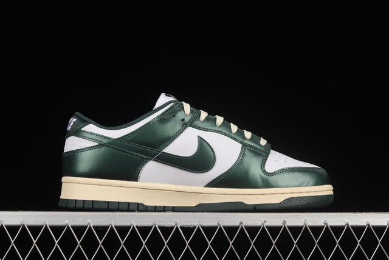

Nike Jordan Air 1 Mid Ss son una perfecta elección. En este caso, estas
zapatillas cuenta con una elaboración de material super resistente. Su
sistema de ajuste con cordones elásticos, las vuelve fácil de poner y
sacar para que ellos no estén luchando. Además, la suela de goma aporta
una rápida respuesta a saltos y movimientos rápidos dándoles seguridad
en todo momento. Cancheras, cómodas y divertidas, ¿Qué más podrían
esperar ellos?
Adidas Forum
Todo el estilo, diseño, comodidad y amor por lo que nos rodea está en
las Zapatillas Forum Low. Su diseño de confección es la representación
de la estética clásica del básquet de aquellos que buscan relucirse sin
importar cuál sea la ocasión. Pero además, es una perfecta oportunidad
para mostrar el compromiso hacia un futuro más sano, con un camino sin
residuos plásticos..
DREAM HERE IS IMPOSSIBLE
Nike Dunk
Audaces, llenas de color, modernas y confiables. Las Zapatillas Nike
Dunk Hi Gs Se tienen una tracción duradera que te acompaña todo el día.
Los detalles de básquet retro marcan un estilo de los años 80, los
colores son protagonistas de unas zapatillas que no vas a querer dejar
de usar nunca. Están elaboradas con cuero y cuero sintético para mayor
durabilidad y una limpieza efectiva. Ponele color a tus días con estas
zapatillas todo terreno.

Kyrie 7
Inspiradas en Kyrie Irving, las Zapatillas Nike Kyrie 7 muestran la
misma fortaleza que el atleta. Con un diseño único y lleno de vida, este
calzado está preparado para resistir las jugadas más audaces. La malla
se ajusta perfectamente a tus pies y permite que te muevas de forma
rápida y cómoda. La unidad Zoom Air Turbo mejora la respuesta y la goma
de la suela aporta tracción a tus pisadas para que te transformes en un
deportista de primera categoría.